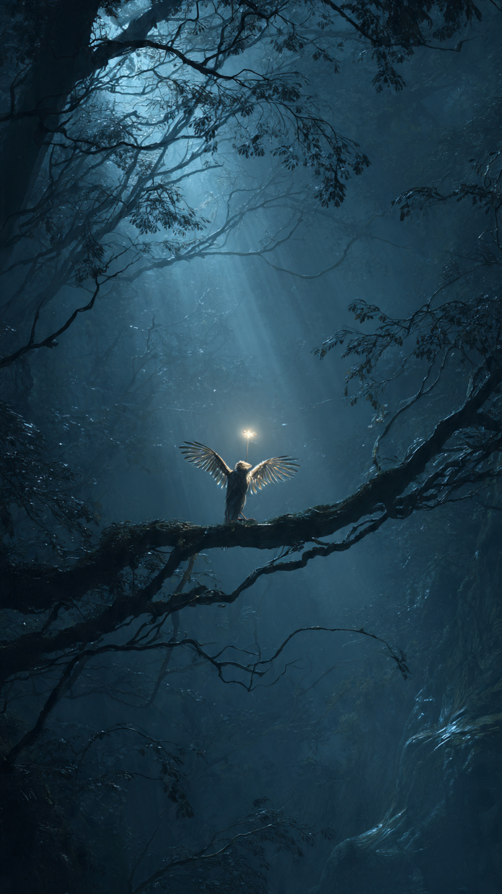
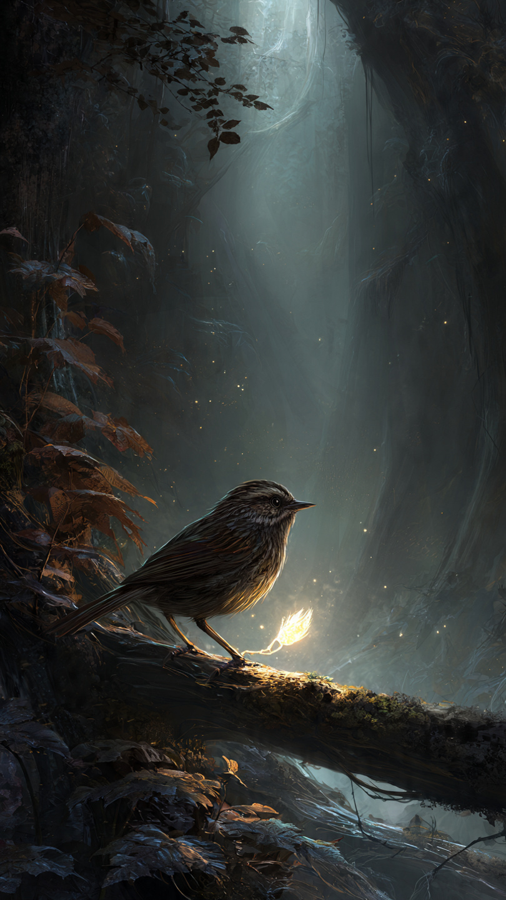

```html
🐦 العصفور الذي أنقذ الغابة من الظلام | قصص أطفال
```
في قلب غابة واسعة مليئة بالأشجار العالية والزهور الملونة، كان يعيش عصفور صغير اسمه زيرو.
كان زيرو أصغر طائر في الغابة، وكانت بعض الحيوانات تظن أنه لا يستطيع فعل شيء مهم بسبب حجمه الصغير.
لكن زيرو كان يملك قلبًا شجاعًا وحبًا كبيرًا لكل من حوله.
كل صباح، كان يطير بين الأشجار ويساعد الحيوانات.
كان ينظف أعشاش الطيور، ويخبر الحيوانات الصغيرة عن الأماكن الآمنة، ويغني أغاني جميلة تجعل الجميع يشعرون بالسعادة.
لكن في يوم من الأيام...
تغير كل شيء.
استيقظت حيوانات الغابة ووجدت أن شيئًا غريبًا حدث.
فقد أصبحت السماء رمادية، واختفى ضوء الشمس، وبدأ ضباب أسود يغطي الأشجار.
الأزهار أغلقت بتلاتها، والأنهار أصبحت هادئة بشكل مخيف.
قالت البومة الحكيمة:
"هناك قوة مظلمة تحاول إطفاء نور الغابة."
خافت الحيوانات الكبيرة.
قال الدب:
"نحن بحاجة إلى حيوان قوي ليواجه هذا الظلام."
نظر الجميع إلى بعضهم، ولم يعرفوا ماذا يفعلون.
أما زيرو، فطار إلى أعلى شجرة في الغابة، ونظر إلى الضباب الأسود.
قال:
"ربما أنا صغير..."
"لكن يمكنني أن أحاول."
ضحكت بعض الحيوانات وقالت:
"كيف لعصفور صغير أن ينقذ غابة كاملة؟"
لكن زيرو لم يستسلم.
طار باتجاه مكان خروج الظلام، ولم يكن يعرف أن رحلته ستكشف له سرًا قديمًا عن الغابة.
📷 الصورة رقم 1

طار زيرو فوق الأشجار حتى وصل إلى المكان الذي خرج منه الضباب الأسود.
كان هناك وادٍ عميق لم يذهب إليه أحد من قبل.
كلما اقترب، أصبح الهواء أبرد، وأصبح الظلام أكثر كثافة.
لكن زيرو تذكر أصدقاءه في الغابة، فجمع شجاعته واستمر في الطيران.
في نهاية الوادي، وجد حجرًا أسود كبيرًا ينبعث منه ضوء مظلم.
وبجانبه كانت توجد مخلوقات صغيرة حزينة تختبئ خلف الصخور.
اقترب زيرو وسأل:
"لماذا تفعلون هذا بالغابة؟"
خرج مخلوق صغير وقال:
"لم نكن نريد إيذاء أحد."
"لقد فقدنا طريقنا إلى منزلنا، وحاولنا صنع ضوء خاص بنا، لكنه تحول إلى ظلام."
فهم زيرو أن المشكلة لم تكن بسبب الشر، بل بسبب خطأ حدث دون قصد.
قال لهم:
"إذا ساعدنا بعضنا، يمكننا إصلاح الأمر."
تعجب المخلوق وقال:
"لكن الجميع يخاف منا."
ابتسم زيرو وقال:
"الخوف لا يعني أنكم أعداء."
عاد زيرو إلى الغابة وأخبر الحيوانات بما حدث.
في البداية ترددت الحيوانات، لكنها وثقت في العصفور الصغير.
ذهب الجميع معه إلى الوادي، وبدأوا يبحثون عن طريقة لإعادة الضوء.
اكتشفت البومة الحكيمة أن الحجر الأسود يحتاج إلى ضوء من قلب الغابة حتى يتحول من جديد.
لكن الوصول إلى مصدر الضوء كان يحتاج إلى شخص يستطيع الطيران بين الأشجار الضيقة...
وكان ذلك الشخص هو زيرو.
طار العصفور الصغير نحو قلب الغابة، لكنه لم يكن يعلم أن هناك اختبارًا أخيرًا ينتظره.
فهل سيتمكن زيرو من إعادة النور؟
وهل ستعود الغابة كما كانت؟
📷 الصورة رقم 2

وصل زيرو إلى أقدم شجرة في الغابة، وكانت في وسطها بلورة صغيرة تلمع بلون ذهبي.
قالت البومة الحكيمة:
"هذه هي بذرة نور الغابة، لكنها لا تضيء إلا لمن يملك قلبًا شجاعًا ونية طيبة."
اقترب زيرو من البلورة، ووضع جناحه الصغير عليها.
وفجأة...
بدأ الضوء ينتشر في كل مكان.
تحول الضباب الأسود إلى غيوم بيضاء جميلة، وعادت الشمس لتشرق من جديد.
بدأت الأزهار تفتح أوراقها، وعادت الأنهار تجري، وامتلأت الغابة بأصوات الحيوانات السعيدة.
أما المخلوقات الصغيرة التي تسببت في الظلام، فقد أصبحت أصدقاء لسكان الغابة.
اجتمعت جميع الحيوانات حول زيرو.
قال الأسد:
"لقد أنقذت الغابة رغم أنك أصغرنا حجمًا."
ابتسم زيرو وقال:
"القوة ليست في الحجم..."
"القوة الحقيقية تكون في القلب والشجاعة والرغبة في مساعدة الآخرين."
ومنذ ذلك اليوم، أصبح زيرو أشهر عصفور في الغابة.
ولم يعد أحد يضحك لأنه صغير.
بل أصبح الجميع يعرفون أن أصغر المخلوقات يمكن أن تفعل أعظم الأشياء.
فقد أنقذ عصفور صغير غابة كاملة من الظلام، فقط لأنه آمن بنفسه ولم يستسلم.
🐦✨ انتهت القصة ✨🐦
العبرة:
لا تقلل من قدر نفسك، فحتى أصغر شخص يمكنه صنع فرق كبير عندما يمتلك الشجاعة والقلب الطيب.